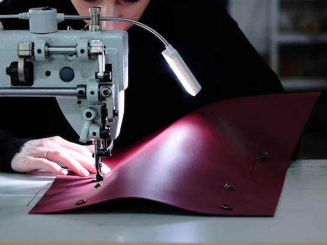

About us
we believe that every dog deserves to be adorned with the finest accessories that reflect their
unique charm and individuality. We are a high-end dog collar brand dedicated to creating
exceptional collars that embody the perfect fusion of luxury, style, and functionality.
Our
brand was born out of a deep passion for dogs and a desire to provide them with accessories
that match their regal presence. We understand that dogs are not just pets; they are beloved family
members who deserve to be pampered and cherished. That's why we've meticulously designed each
collar to be a testament to the extraordinary bond between dogs and their owners.
Craftsmanship lies
at the heart of our brand. We collaborate with skilled artisans who possess a deep understanding of their craft.
Using the finest materials sourced from trusted suppliers, they painstakingly handcraft each collar with precision
and attention to detail. From the exquisite stitching to the supple leather, every element is carefully chosen to ensure
unparalleled quality.
